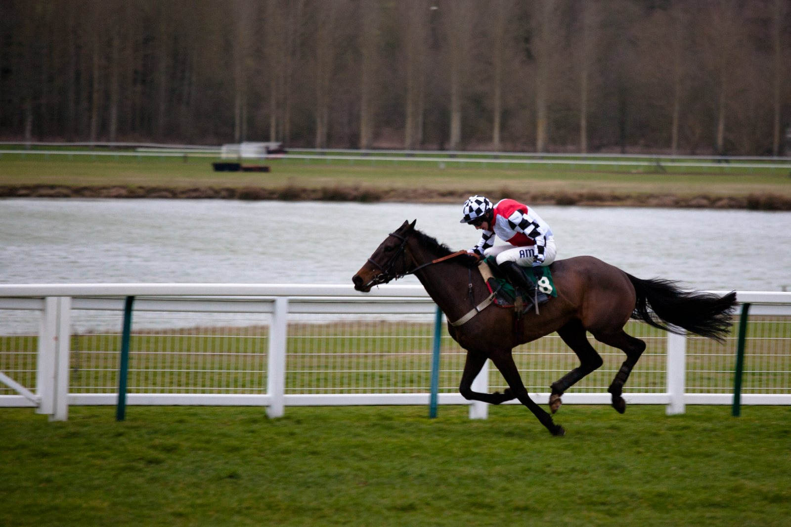

Goliath du Rheu, favorito del Prix Heros XII antes del Grand Steeple de otoño en Auteuil
Auteuil disputa el sábado 17 de octubre las últimas preparatorias para las 48h de l'Obstacle. Goliath du Rheu parte como favorito en el Prix Heros XII (Grupo III).

Goliath du Rheu vuelve a pista con una victoria reciente. Tras una larga ausencia, reapareció ganando el Prix Richard et Robert Hennessy (Grupo III), la primera preparatoria hacia el Prix La Haye Jousselin (Grupo I), el Grand Steeple de otoño. El siguiente paso es el Prix Heros XII (Grupo III), con salida a las 17.18 y diez participantes.
Parte como favorito en un lote con nombres de peso. Bon Garçon fue segundo en el Grand Steeple-Chase de Paris-Défi des Haras (Grupo I). Toscana du Berlais ganó la propia La Haye Jousselin en 2025, y Kolokico fue segundo en el Grand Steeple de Paris ese mismo año. Completa el grupo de rivales el joven Kilomètre Illimité.
La lectura es sencilla: Goliath du Rheu sale por delante de un ganador de la carrera que todos preparan.
Hay también una incógnita. Royal Saga se estrena a este nivel después de haber estado, en su etapa de caballo joven, entre los mejores saltadores sobre obstáculos grandes.
La tarde reúne a los mejores steeple-chasers de edad y de 4 años, además de la élite de los vallistas de esa generación. Todos apuntan a los campeonatos del 14 y 15 de noviembre, dentro de las 48h de l'Obstacle.
La primera carrera destacada es el Prix Orcada (Grupo III, 14.33), preparatoria del Prix Maurice Gillois (Grupo I), el Grand Steeple-Chase de los 4 años. Métronomique, líder de su generación, reapareció ganando el Prix The Fellow-Marquise de Moratalla (Grupo III) y concentra las miradas. Detrás de él aparece French Lover, un caballo grande y potente que el 22 de septiembre terminó no muy lejos de Métronomique.
Por Martín Larrañeta